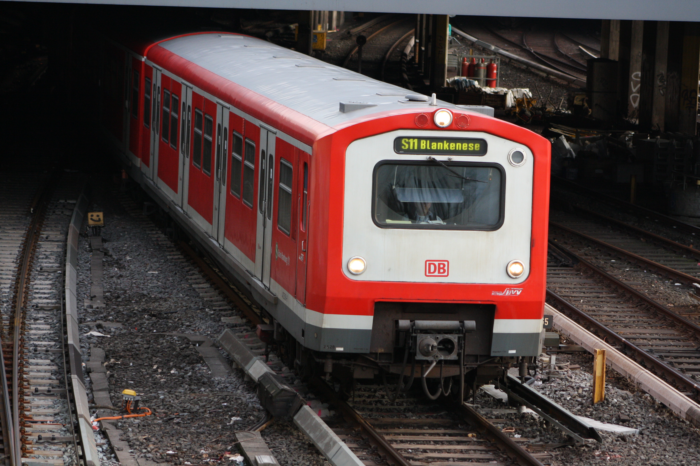

472-473

- Backride 🠆 Nein
- Länge 🠆 65,8m
- Haupteinsatz 🠆 S11, S2, S21
Mit dem Ausbau des Hamburger S-Bahn-Netzes Anfang der 1970er Jahre wurde die DB-Baureihe 472/473 hergestellt. Die Baureihen 472 und 473 verkehren überwiegend auf den Linien S11, S2, S21.
Ausgestattet mit elektrischer Kupplung und ohne Fenstervorsprung sind diese Züge nicht zum Surfen geeignet.
Bei der Baureihe 473 wird der Mittelwagen angetrieben. In dem Mittelwagen befinden sich dort außerdem mehr Sitzplätze.